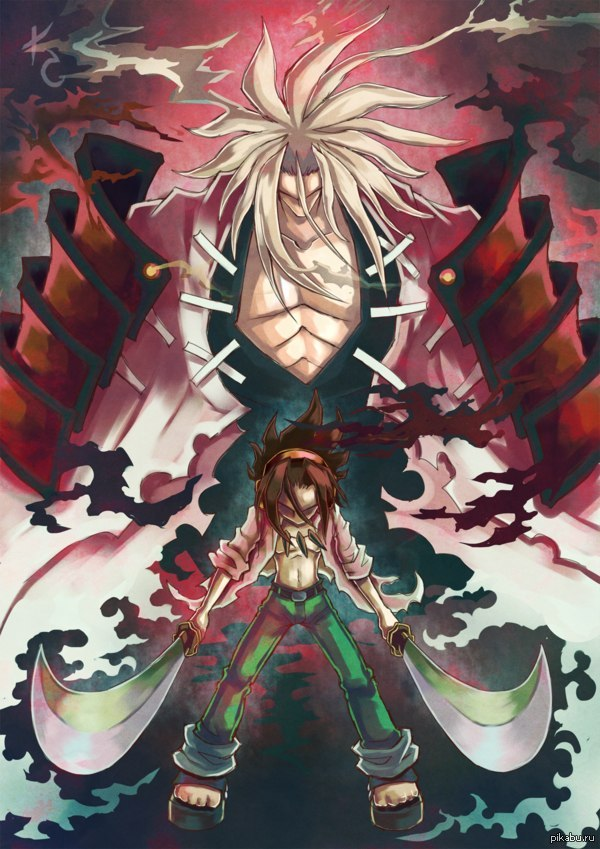

Йо Асакура(麻倉 葉, Asakura Yō) — потомок древнего японского рода Асакура. Лидер команды Фумбари Онсэн в Битве Шаманов.
Путешествует по миру вместе со своей женой Анной, проводя дипломатические мероприятия.
Внешность
У него стройное телосложение, темно-каштановые волосы средней длины и глаза кофейного цвета. Тело покрыто мелкими порезами и шрамами, возникшими от постоянных контактов с духами.
Его школьная форма — темно-зеленые брюки и белая распахнутая рубашка; у него также есть оранжевый спортивный костюм школы Синра.[5] Обут в банные сандалии. Его ожерелье с когтями — вещь прошлого, имеющая особую ценность и бережно хранящаяся по сей день, так как досталась ему от Матамуне; Йо носил ожерелье, чтобы, когда он станет достаточно сильнее, вернуть Матамуне в его физическую форму. Оранжевые наушники принадлежали его отцу, он нашел их в выдвижном шкафу вместе с проигрывателем и гитарой.[6] Его зимняя школьная форма — темно-зеленый пиджак, застегнутая белая рубашка с галстуком и темно-зеленые штаны. Также у него есть оранжевый спортивный костюм школы. Иногда он надевает дождевик, который покупала для себя Анна. Она отдала его Йо, сказав, что он ей не нужен, потому что это дешёвая вещь, которую пришлось купить.[7] Его обычная одежда — синие штаны и майка. Одежда для путешествий — джинсы, белая куртка, ботинки и рюкзак.
С возрастом его телосложение стало крепче, а волосы длиннее и волнистее. Он стал носить рубашку и широкие оранжевые штаны с прицепленной серебряной серьгой Хао. Его имидж схож со стилем хиппи, а также он стал походить на своего отца в молодости.
Личность
Очень позитивный и веселый человек, обладает душевной добротой, которой делится со всеми. Всегда спокоен, а в каких-то моментах даже безразличен к ситуации. Иногда, его спокойствие может сменится гневом, если близким грозит серьезная опасность. Он ценит своих друзей и не бросит их беде. Общительный со своими друзьями-духами, но слишком застенчивый в общении с другими людьми. Впервые повстречав своего ровесника, Манту Оямада, который мог видеть духов, он рискнул жизнью, чтобы завязать дружбу, но этот мотив был скрыт беззаботностью характера. Встреча Йо и Манты стала первой из череды знакомств с другими шаманами и духами.
Йо был очень беспечным ребёнком. Когда в четыре года он узнал о Короле Душ, то захотел подружиться с ним, чтобы не работать и спокойно жить, ни о чём не заботясь,[9] а также слушать любимую музыку. Кроме того его взгляд на жизнь стал более философским. Когда он нашел наушники отца, началась его любовь к музыке. Возможно, он желал встретить отца, которого он никогда не видел, а может быть, брать без разрешения вещи отца было выражением его слегка бунтарской натуры.
С ранних лет он был одинок и отчужден всеми вне семьи, поэтому предпочитал проводить время с духами. Люди побаивались его и называли «ребёнком они», а дети избегали его.[10] Несмотря на свою доброту к окружающим, признался брату, что недолюбливает людей.[11] Йо сочувствовал Хао и Анне, и выслушивал своего деда, запоминая его мысли о людях. Совсем ещё маленьким, он признался Судзи, что став он богом, то уничтожил бы всех людей.[12] Но повзрослев, он понимает, что никогда бы не смог так поступить.
Когда Йо стал миротворцем, он беспрерывно прикладывает все усилия для погашения немеркнущего пламени войны ради того, чтобы мирно жить с Анной и Ханой.